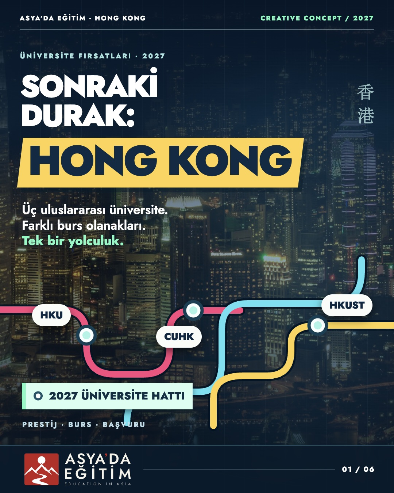
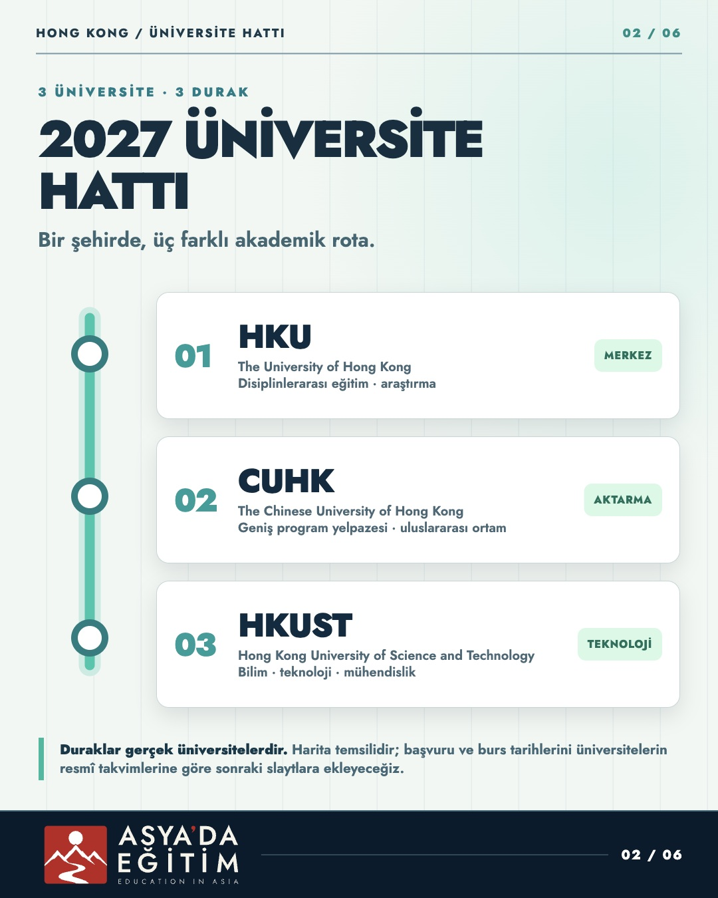

01 · KapakKatmanlı kaynağı aç
Altı slaytlık üniversite hattı fikrinin ilk iki slaytı. Gerçek Hong Kong fotoğrafı ayrı görsel katmanıdır; yazı, metro hatları ve duraklar düzenlenebilir HTML/CSS/SVG katmanlarıdır. Beğenilirse diğer dört slayt aynı tasarım dilinde tamamlanacak.


Üretim manifesti · Fotoğraf kaynağı · Konsept brief'i
HKU, CUHK ve HKUST gerçek üniversitelerdir. Metro şeması gerçek MTR güzergâhı değildir. Kesin burs tutarları ve başvuru tarihleri, ilgili resmî kaynaklar doğrulanmadan görsele eklenmedi.